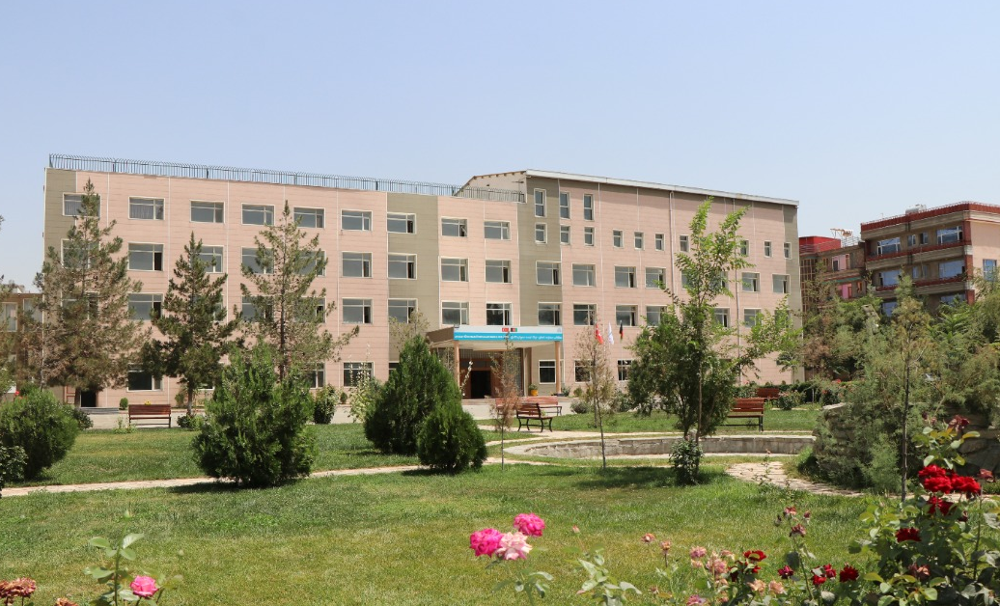

Perfect English & Computer Instructor | Empowering Afghan Women
I am Mariam Mustazaf – a perfect English and Computer instructor, dedicated to empowering Afghan women through education.
I earned my contemporary education at Afghan-Turk Maarif International Girls High School in Kabul. When schools banned girls beyond grade six in 2021, I turned tragedy into opportunity. I became a top 10 nominee for the 2021 Children's Peace Prize for voluntarily mentoring Afghan women. Over seven years, I have tutored over 1000 women in English and computer skills. Currently, I pursue my Bachelor's in Computer Science at an American university while working as a professional English-Persian interpreter.

As a perfect English and Computer instructor, I have worked with international organizations to help Afghan women. In 2024, I joined Amala learning bridge, raising mental health awareness for 500+ women. I co-founded Parvaaz Women's Mental Health Foundation, supporting 700+ girls. The Alekain Foundation changed my life, bringing me closer to becoming Afghanistan's first medical data scientist. I am determined to earn my Computer Science degree, create a non-profit for AI education in vulnerable countries, and use technology ethically to empower others.